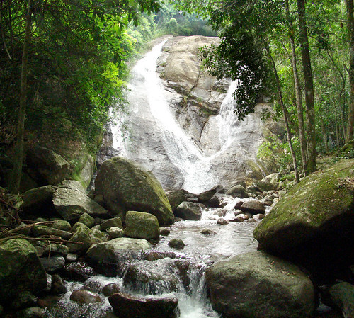
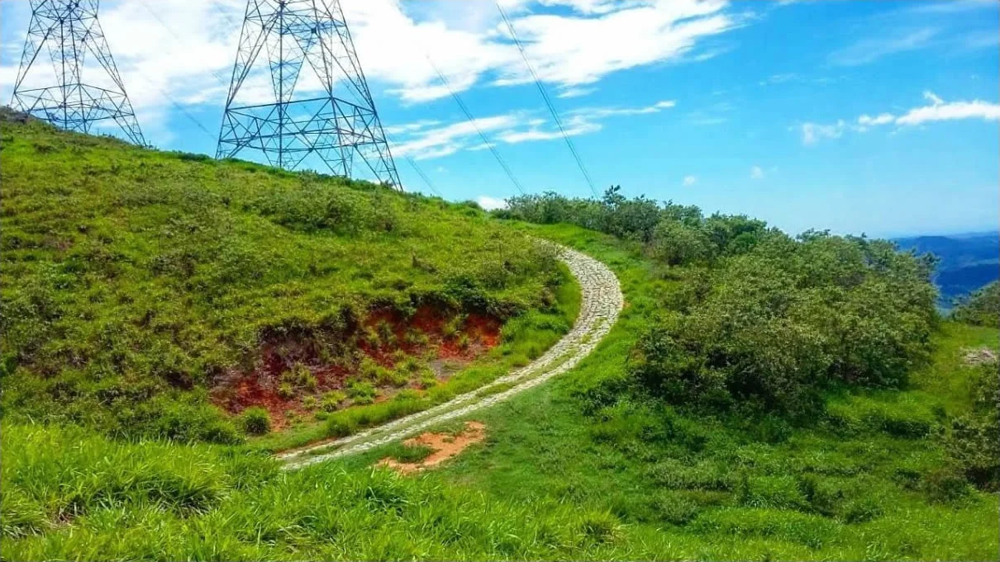
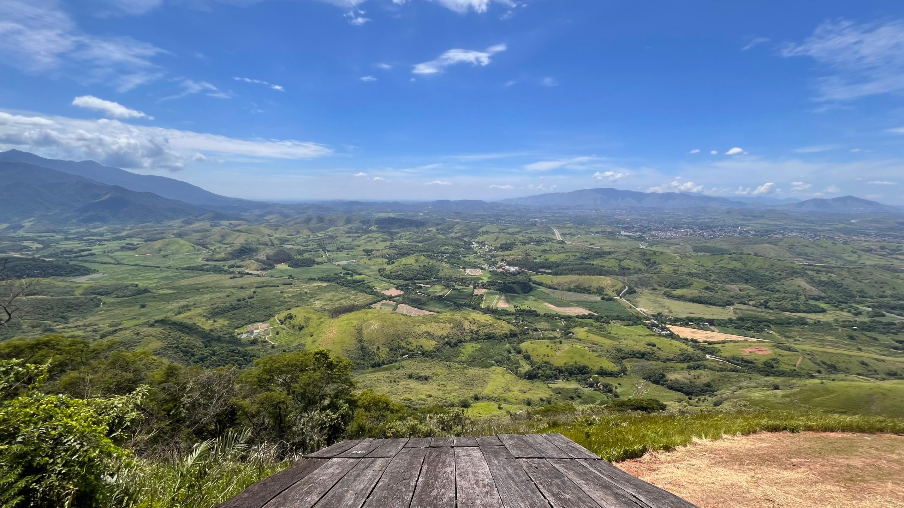
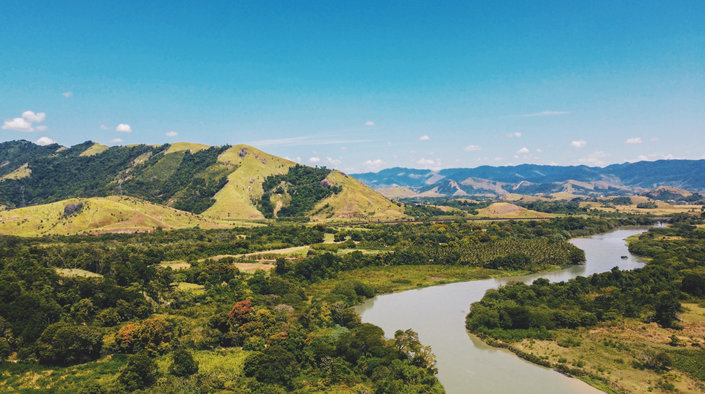

Informações Geográficas sobre Japeri
O município de Japeri, localizado na Baixada Fluminense, faz parte da Região Metropolitana do Rio de Janeiro. Sua área territorial é de aproximadamente 81,7 km², inserida no bioma da Mata Atlântica. A cidade está situada a cerca de 30 metros de altitude em relação ao nível do mar e possui uma das menores extensões territoriais entre os municípios fluminenses.
De acordo com o Censo de 2022, Japeri tem 96.289 habitantes, enquanto a estimativa populacional de 2024 aponta para cerca de 102.149 pessoas, resultando em uma densidade demográfica superior a 1.170 habitantes por km². Os moradores são chamados de japerienses.
Criado oficialmente em 1991, após sua emancipação de Nova Iguaçu, o município é marcado pelo predomínio de áreas urbanas, mas ainda conserva espaços de mata nativa e áreas rurais, especialmente na região de Jaceruba.
A Riqueza da Mata Atlântica
Mergulhe nas trilhas e cachoeiras do nosso Parque Municipal. Um refúgio verde, perfeito para o ecoturismo e aventura.




História e Cultura
Japeri é uma cidade rica em marcos históricos e culturais. Desde a pioneira Estação Ferroviária, que deu início à primeira ferrovia do Brasil, até a serena Igreja de Nossa Senhora da Conceição em Jaceruba. Explore também o único Campo de Golfe público do país e as belezas naturais da Área de Proteção Ambiental (APA) de Jaceruba, que contam a história e a diversidade da nossa região.
Localize a Nossa Cidade
Veja no mapa onde estamos e comece a planejar sua visita aos pontos turísticos de Japeri.